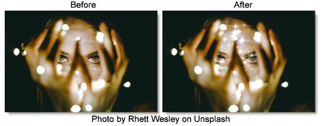

S_Sparkles
Description
Generates a field of sparkling glint effects.
The S_Sparkles filter comes from the Emmy award winning Boris FX Sapphire filter set.
Category
Light.
Controls
Presets
To select a preset, pick one from the Presets window.
Frequency
The frequency of the sparkles. Increase to zoom out or decrease to zoom in.
Density
Increase to add more sparkles.
Seed
Used to initialize the random number generator. The actual seed value is not significant, but different seeds produce different results and the same value should give a repeatable result.
Brightness
Scales the brightness of all the sparkles.
Brightness Details
Color
Scales the color of all the sparkles.
Brightness X
Scales the brightness of the horizontal glint rays.
Brightness Y
Scales the brightness of the vertical glint rays.
Brightness Diag1
Scales the brightness of the diagonal rays from top right to bottom left.
Brightness Diag2
Scales the brightness of the diagonal rays from top left to bottom right.
Size
Scales the length of all the glint rays.
Size Details
Size X
Scales the length of the horizontal glint rays.
Size Y
Scales the length of the vertical glint rays.
Size Diag1
Scales the length of the diagonal rays from top right to bottom left.
Size Diag2
Scales the length of the diagonal rays from top left to bottom right.
Size Red
Scales the length of the red component of the rays. If the red, green, and blue sizes are equal the sparkles will be monochrome.
Size Green
Scales the length of the green component of the rays.
Size Blue
Scales the length of the blue component of the rays.
Shift Start X & Y
Translation offset of the result.
Bg Brightness
Scales the brightness of the image before combining with the sparkles. If 0, the result will contain only the sparkles over black.
Show Size
Enables/disables the on-screen control for adjusting the size parameters.
Show Shift Start
Enables/disables the on-screen control for adjusting the Shift Start parameter.